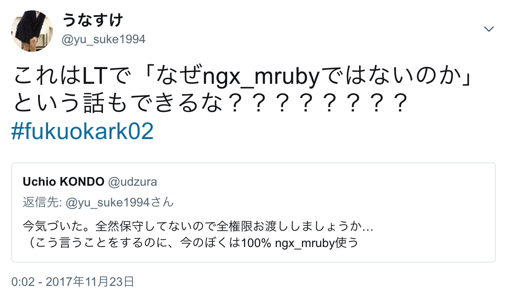

2017-11-24
福岡Ruby会議02・前夜祭
うなすけ
タイトル長過ぎました 🙇
新規RailsアプリをECSで運用したときの知見や、
現行のRailsアプリをDocker化するときに遭遇した課題などについて
改め
Docker(ECS)化するにはもってこいだった
なんだかんだ環境ごとにDockerfileはわかれちゃう
app
config
db
docker/
└ app-base/
└ Dockerfile # apt packages
└ app-development/
└ Dockerfile # gem group :development
└ app-production/
└ Dockerfile # gem group :productionQ. assetどこに置く問題
コンテナの中に置くことにした
CDN → nginx → container
参考:amakanの本番環境をDockerに移行した - ✘╹◡╹✘asset配信用ドメイン(CDN)以外からの
assetへのアクセスを弾きたい
nginx.confで制御
| path | asset.example.com | example.com |
|---|---|---|
/asset/* | 200 | 200 |
/ | 404 | 200 |
なるべく速くすませたい
https://github.com/unasuke/mikoshi/
Service / Task DefinitionをYaml(ERB)で管理する
定義を含むDocker imageを作成してpull/deploy
# task_definitions/ping2googledns.yml.erb
task_definition:
family: "ping2googledns"
network_mode: "bridge"
container_definitions:
- name: "ping"
image: "unasuke/ping2googledns:latest"
cpu: 128
memory: 128
hooks:
after_register:
- echo registerddeploy command in CI job
docker run --rm --tty \
-e IMAGE_REVISION=${DRONE_COMMIT_SHA} \
-e AWS_REGION=${AWS_DEFAULT_REGION} \
${ECR_HOST}/mikoshi-container:latest deploy -g app-nameECS RunTaskでのdb:migrateがSIGTERM
nginxにtrueを渡して落としていたのが
つられてRailsも落ちる 😨
Railsのみを含むTask Definitionを作成して
それを使いdb:migrate
🤔🤔🤔🤔🤔🤔🤔🤔🤔🤔
Rack middlewareでやっちゃえばいいんじゃ？！
Rack middlewareでやっちゃえばいいんじゃ？！
回収 https://twitter.com/yu_suke1994/status/933349862862594048時間ないんで省略 🏃💨
既存のRailsっていうのはTMIXのことです
あなたとJAVATMIXは1DB、複数App
ridgepoleでschema管理
ridgepole applyはとあるRailsアプリの
インスタンスからcapで行なっていた
⬆️
コンテナ化するとなると……？
ECS RunTaskで行なう(Done!)
このためにmikoshiがRunTaskに対応したCIでspecを実行するときに
いちいちridgepole applyしている……
⬆️
schema適用済のDB containerを用意できないか？
手がつけられていない……もっと詳しく